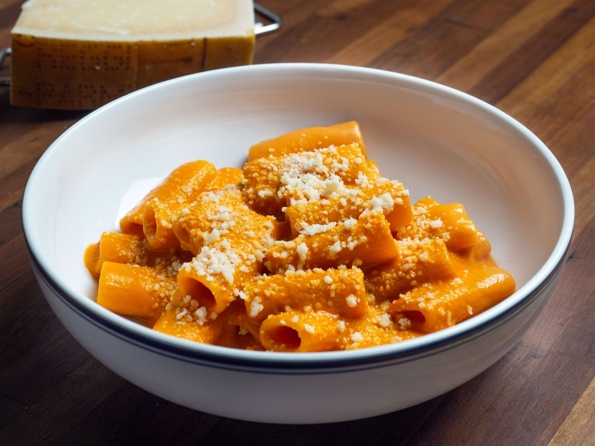

Rigatoni Alla Vodka

This is gauranteed to be one of the most amazing pasta dishes you will ever make in your life. The
tomato sauce is super tangy, the vodka helps bring out flavours you wouldn't ever know existed until now!
Ingredients
- 450g Rigatoni
- 120g Parma Ham (can sub for Pancetta)
- 3 Gloves Garlic, Minced
- 150ml Cream
- 3-4 Tablespoons, Vodka
- 2 Tins Whole Peeled Tomatoes
- 0.5-1 tsp Chilli Flakes
- 1 Stem of Basil
- Parsley, Chopped for Garnish
- Parmesan, for Garnish
- 2-3 Tablespoons, Olive Oil
- 30g Unsalted Butter
- Salt & Pepper
Directions
- To start, prepare the garlic, tomatoes, and parma ham. Mince the garlic. Then slice the parma ham into little strips. Puree your
tomatoes in a food mill or a blender.
- Get a pot of salted water on the stove for the pasta and a wide-bottomed pan next to it to cook the sauce.
- In the pan, add the parma ham and a few tablespoons of olive oil and cook over medium-high heat. Cook the parma ham
until it just begins to crisp up and then add the basil and garlic. The key is to try and time it so that you add the garlic
at the perfect time to allow for it to cook and not burn and for the parma ham to get crisp. If you don’t nail it, that’s fine,
but when you start to see the garlic browning too much, it's time to deglaze and stop the cooking. (If you want to omit the
parma ham, then just use extra olive oil and start this sauce by adding garlic and basil to the oil and then adding the vodka
and then the tomatoes.)
- Turn the heat off for a minute and then add the vodka, let it sizzle and calm down. Turn the heat back on and reduce the vodka
till it’s almost nothing. Now add the tomatoes. Cook the tomatoes on medium heat until it reduces and becomes very thick.
You can tell how thick it's getting by dragging a flat wooden spoon across the pan and looking at how the sauce holds itself.
Once you’ve cooked it down till most of the water is cooked out and you can see the bottom of the pan when you mix the sauce,
then its time to add the cream. Bring sauce to a simmer and cook it on a simmer for a few minutes to thicken. Then cook the
rigatoni in salty water.
-
Once the pasta is al dente, drain and transfer to the sauce and marry the sauce with the pasta for a couple of minutes until
the sauce coats the pasta. Drop-in a 1-2 tablespoons of cold butter and a little pasta water to control the consistency of the
sauce and then serve immediately with parm and fresh parsley.